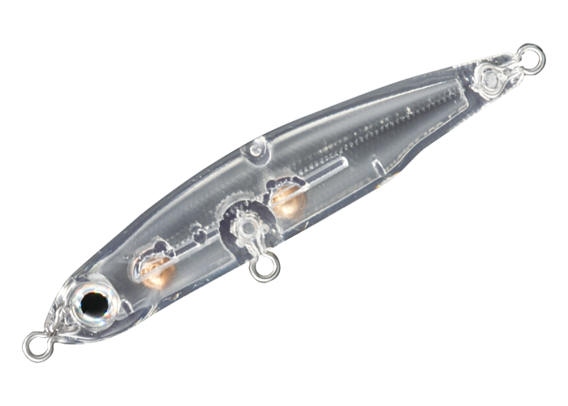
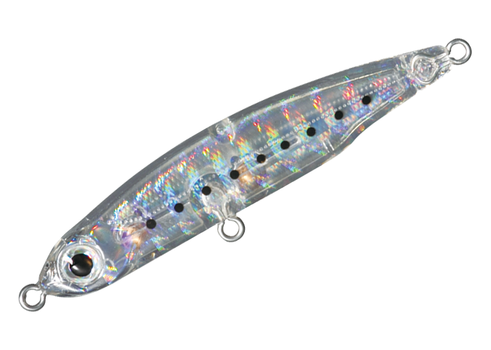
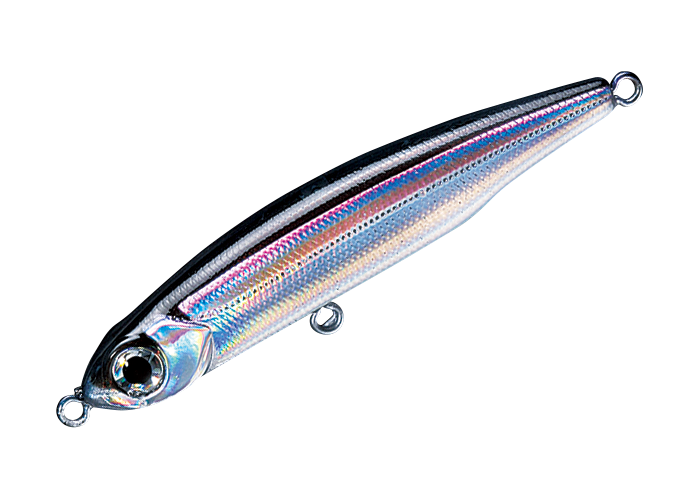
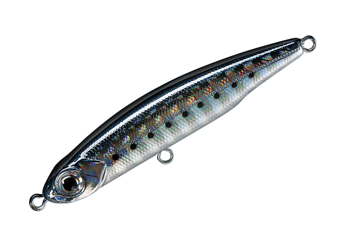

シラスミノー48リップレス
（SHIRASU MINNOW 48 LIPLESS）
シラスミノー48リップレスは、スミスのソルトウォーター・ライトゲーム専用リップレスミノーです。
48mmの小さく細いボディで、シラスや小魚を食べているメバル・アジ・カマスに、本物そっくりのシルエットで口を使わせるのが最大の特徴。水面直下を漂わせるサスペンド（LSP）と、レンジを問わないシンキング（LLS）の2タイプがあります。

画像出典:SMITH公式HP
スペック
- メーカー
- SMITH（スミス）
- 全長
- 48mm
- 自重
- 2.0g（48LSP）／3.1g（48LLS）
- タイプ
- サスペンド（48LSP）／シンキング（48LLS）
- フック
- シラスミノーフック #12
- カラー
- 48LSP：全11色／48LLS：全10色
- ターゲット
- メバル・カマス・アジ・メッキ・カサゴ・ソイなど
- 価格
- 1,300円（48LSP）／1,450円（48LLS）（税抜）
▼今すぐチェック
シラスミノー48リップレスの特徴
シラスや小魚そのままの、スモール＆スリムなリップレスミノー
-
本物の小魚のようなフォルム
48mmの小さく細いリアルなボディで、シラスや小型のベイトフィッシュを食べている魚に見切られにくい。形だけでも魚を引きつける。
-
水面直下で漂わせるサスペンド（LSP）
水平姿勢をたもつサスペンドタイプで、超デッドスローシンキングに近いバランス。ステイや漂わせる釣り、ドリフト、デッドスローな巻きで、水面を意識している魚に口を使わせる。シャロー攻略にも向く。
-
どのレンジも探れるシンキング（LLS）
水平姿勢（センターバランス）のまま、フォール中に細かく震えるフォーリングバイブレーションを出す。デッドスローの巻き、ストップ＆ゴーのフォール、ストラクチャー周りのテンションフォールと、ふつうのミノーでは攻めきれない場所で使える。このサイズでは飛距離も抜群で、ボイル撃ちにも便利。
シラスミノー48リップレスの使い方
基本はデッドスローでゆっくり巻いて、ときどき止める使い方です。
水面直下でボイルが起きている時や、魚が浮いている時はサスペンドのLSPでステイや漂わせを。レンジを下げたい時や遠くのボイルを狙う時はシンキングのLLSで、ストップ＆ゴーやテンションフォールを織り交ぜましょう。デイゲームでは、泳がせずにまっすぐ引いてレンジをキープし、止めを繰り返すのも効果的です。
シラスミノー48リップレスの得意な状況
シラスやイワシの稚魚など、小さなベイトが岸に寄っている時に出番です。
ワームやほかのプラグに反応しない時でも、小さなベイトにそっくりなシルエットで、セレクティブな魚に口を使わせられるのが強み。メバルを中心に、アジ・カマス・メッキなど、ライトゲームのいろいろな魚が釣れます。
ワンポイント
迷ったら水面に魚が浮いていればLSP、沈んでいればLLSで使い分けましょう。巻きスピードはできるだけゆっくりにして、ベイトが漂っているように見せるのがコツです。
48LSPと48LLSの使い分け
| モデル | 自重／タイプ | 得意な場面 |
|---|---|---|
| 48LSP | 2.0g／サスペンド | 水面直下でのステイや漂わせ、ドリフト、デッドスローな巻き。シャロー攻略に |
| 48LLS | 3.1g／シンキング | レンジを問わず探る。ストップ＆ゴーのフォールやテンションフォール、遠くのボイル撃ちに |
どちらも全長48mm・フックはシラスミノーフック#12。魚のいるレンジに合わせて2タイプを持っておくと、ライトゲームの幅が広がる。
人気カラー
シラスミノー48リップレスの人気カラーを紹介します。

クリアー（48LSP）透明なボディで、澄んだ水やスレた魚に自然に見せる。

シラスレーザー（48LSP）シラスをイメージしたカラー。シラスパターンの定番に。

コイワシ（48LLS）小さなイワシを食べている時のナチュラルカラー。

レーザーイワシ（48LLS）レーザーのフラッシングでアピールできるイワシカラー。
画像出典:SMITH公式HP
▼今すぐチェック
シラスミノー48リップレスに似ているルアー
-
 アミコン40S
ブルーブルー
詳細はこちら＞
アミコン40S
ブルーブルー
詳細はこちら＞
アミを食べている魚に合わせた小型シンキングミノー。さらに小さなベイトに。
-
 ブローウィン50S
ブルーブルー
詳細はこちら＞
ブローウィン50S
ブルーブルー
詳細はこちら＞
飛距離の出る小型シンキングミノー。遠くのボイルを狙いたい時に。
-
 ラプター50SS
レガーレ
詳細はこちら＞
ラプター50SS
レガーレ
詳細はこちら＞
小型のスローシンキングミノー。表層をゆっくり見せたい時に。